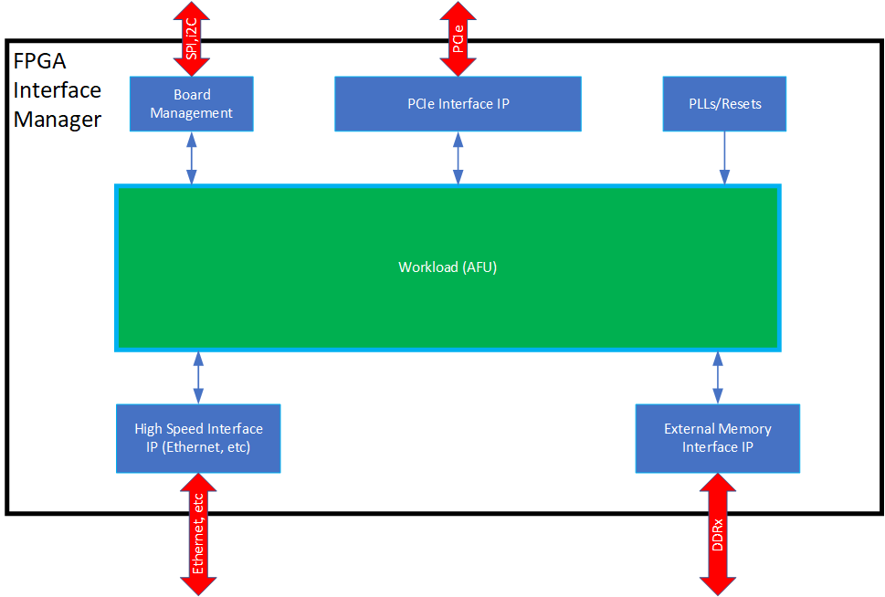
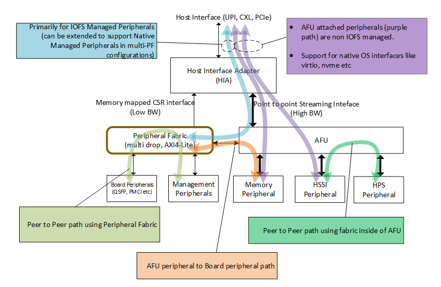
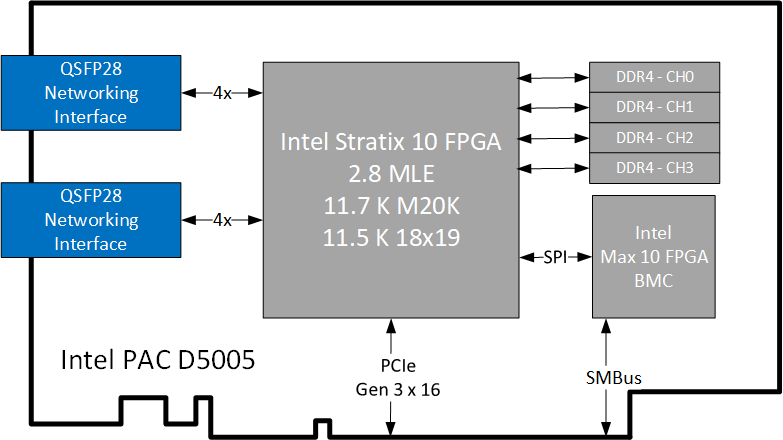
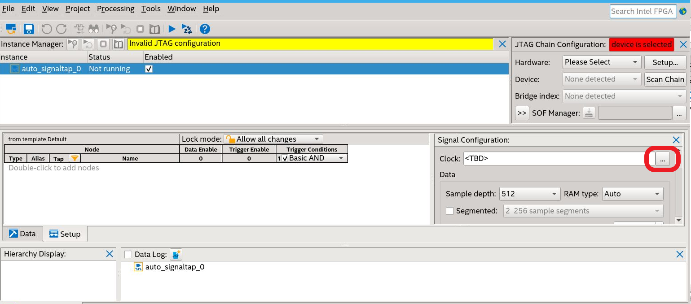
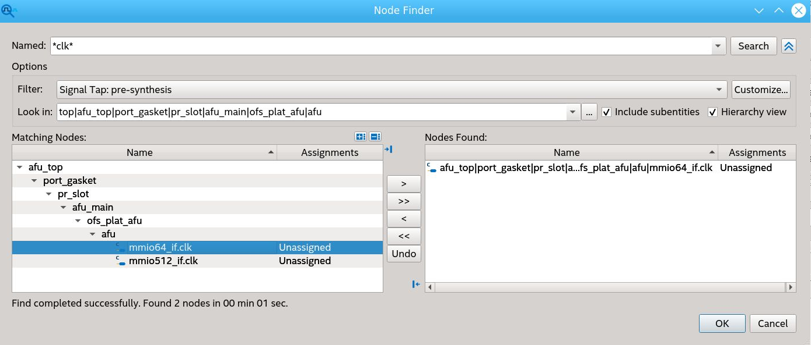
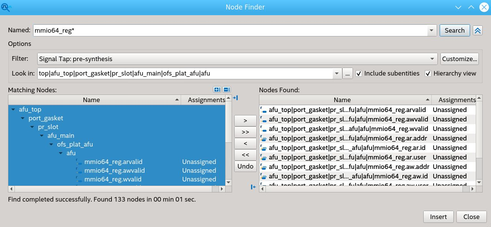
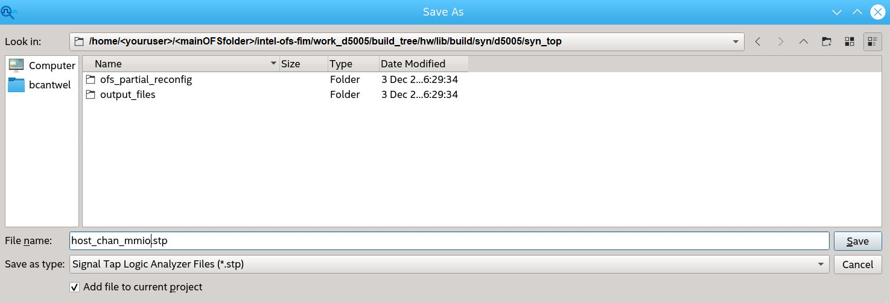

AFU Developer Guide: OFS for Stratix 10® FPGA PCIe Attach FPGAs¶
1. Introduction¶
This document is a design guide for creating an Accelerator Functional Unit (AFU) using Open FPGA Stack (OFS) for Stratix 10® FPGA. The AFU concept consists of separating the FPGA design development process into two parts, the FIM and AFU, as shown in the diagram below: 
{kind=link}
This diagram shows the FPGA board interface development separation from the internal FPGA workload creation. This separation starts with the FPGA Interface Manager (FIM), which consists of the external interfaces and board management functions. The FIM is the base system layer typically provided by board vendors. The FIM interface is specific to a particular physical platform. The AFU uses the external interfaces with user-defined logic to perform a specific application. Separating the lengthy and complicated process of developing and integrating external interfaces for an FPGA into a board allows the AFU developer to focus on their workload needs. OFS for Stratix 10® FPGA provides the following tools for rapid AFU development:
- Scripts for both compilation setup
- Integration with Open Programmable Acceleration Engine (OPAE) SDK for rapid software development for your AFU application
Please notice that the AFU region consists of both static and PR logic in the above block diagram. Creating AFU logic for the static region is described in [Shell Developer Guide: Open FPGA Stack for Stratix 10® PCIe Attach FPGAs]. This guide covers logic in the AFU Main (PR) region.
1.1 Document Organization¶
This document is organized as follows:
- Description of design flow
- Interfaces and functionality provided in the Intel® FPGA PAC D5005 FIM
- Downloading and installing OFS and OPAE SDK
- Hardware/Software co-simulation using ASE
- Testing the AFU example in Intel® FPGA PAC D5005
- Debugging an AFU with Remote Signal Tap
This guide provides theory followed by tutorial steps to solidify your AFU development knowledge.
This guide uses the Intel® FPGA PAC D5005 as the platform for all tutorial steps. Additionally, this guide and the tutorial steps can be used with other platforms; However, please consult the board and FIM supplier of other platforms for specific instructions on the use of custom FIM to develop AFU design.
If you have worked with previous Programmable Acceleration products, you will find OFS for Stratix 10® FPGA is similar; however, there are differences, and you are advised to carefully read and follow the tutorial steps to understand the design tools and flow fully.
1.2 Prerequisite¶
This guide assumes you understand the following FPGA logic design-related knowledge and skills:
- FPGA compilation flows, including the Quartus® Prime Pro Edition design flow.
- Static Timing closure, including familiarity with the Timing Analyzer tool in Quartus® Prime Pro Edition software, applying timing constraints, Synopsys* Design Constraints (.sdc) language and Tcl scripting, and design methods to close on critical timing paths.
- RTL and coding practices to create synthesized logic.
- High-level synthesis (HLS) and Platform Designer design entry tools are supported.
- RTL simulation tools.
- Signal Tap Logic Analyzer tool in the Quartus® Prime Pro Edition software.
1.2.1 Development Environment¶
To run the tutorial steps in this guide requires this development environment:
| Item | Version |
|---|---|
| Operating System | RHEL 8.6 |
| Python | 3.6.8 |
| cmake | 3.15 |
| GCC | 7.4.0 |
| git | 1.8.3.1 |
| perl | 5.8.8 |
Verify your development has the above tools installed.
The following server and PAC card are required to run the examples in this guide:
- Intel® FPGA PAC D5005 with root entry hash erased (Please contact Altera® for root entry hash erase instructions). The standard Intel® FPGA PAC D5005 card is programmed only to allow the FIM binary files signed by Altera® to be loaded. The root entry hash erases process will allow unsigned FIM binary files to be loaded.
- Qualified Server Models see Qualified Servers.
- Intel® FPGA PAC D5005 installed in the qualified server following instructions in [Board Installation Guides: PCIe Attach N6000/N6001/D5005].
1.3 Acceleration Functional Unit (AFU) Development Flow¶
OFS Stack provides a rapid design methodology for creating complex FPGA applications. In addition, you are provided with the following:
- Hardware shell layer, known as FIM
- Software stack including tools for debug/diagnostics
- FPGA design flow with full-stack simulation support
- AFU code samples demonstrating all interfaces
For any non-Altera® platform, contact your board vendor for the above components specific to the platform.
To start with AFU development, the first step should be to understand your platform capabilities. For example, what interface is the FPGA connected to the Host machine over PCI-E, if it is AXI like the Stratix 10® FPGA Platform, or CCIP or CXL. Does the platform provide an External Memory Interface or the HSSI interface? Once you know what the platform offers, you can develop your AFU requirements and architecture as the next step.
This document will cover example AFU architecture and things that will help build AFU for Stratix 10® FPGA reference platform and others coming in the future. In addition, this knowledge can be relatively applied for AFU development on other vendor-provided platforms.
The figure below shows a typical AFU development process independent of the platform used.
flowchart TB;
A[Understand platform capabilities with OFS]-->B[Review AFU requirements and code samples provided];
B[Review AFU requirements and code samples provided]-->C[Define AFU architecture];
C[Define AFU architecture]-->D[Design AFU hardware];
D[Design AFU hardware]-->E[Develop AFU software to control hardware];
E[Develop AFU software to control hardware]-->F{"Simulate in AFU Simulation Enviroment (ASE)"};
F:::if -- Pass --> H["Compile AFU for synthesis, place & route and timing (uses Quartus)"];
H["Compile AFU for synthesis, place & route and timing (uses Quartus)"] --> I["Analyze Quartus Compile reports"];
I --> J{"Quartus reports clean? (e.g. timing closed)"};
J:::if -- No --> P2;
J -- Yes --> K["Run/Validate design on OFS Platform"];
K --> L{"Hardware validation pass?"};
L == Yes ==> M["AFU ready to deploy"];
L -- No --> N["Debug on hardware using traditional FPGA tools (e.g. SignalTab"];
N --> P2["Fix AFU design (e.g Design changes, timing closure constraints)"];
P2 --> O{"Need functional validation?"};
O:::if -- Yes -->P["Fix AFU design (e.g Functional design changes, bug fixes)"];
O -- No -->H;
F -- Fail --> P;
P -->D;
classDef default color:#fff,fill:#0071c5,stroke:#71c5,stroke-width:1px
classDef if color:#0071c5,fill:#fff,stroke:#0071c5,stroke-width:2px1.3.1. High Level Data Flow¶
The OFShigh-level data flow is shown below:  The control and data are composed of the following:
{kind=link}
- Host Interface Adapter (PCIe)
- Low-Performance Peripherals
- Slow speed peripherals (I2C, Smbus, etc)
- Management peripherals (FME)
- High-Performance Peripherals
- Memory peripherals
- Acceleration Function peripherals
- HPS Peripheral
- Fabrics
- Peripheral Fabric (multi-drop)
- AFU Streaming fabric (point to point)
Peripherals are connected using AXI or Avalon:
- Via the peripheral fabric (AXI4-Lite, multi-drop)
- Via the AFU streaming fabric (AXI-S, point to point)
Peripherals are presented to software as:
- OFS managed peripherals that implement DFH CSR structure.
- Native driver managed peripherals (i.e., Exposed via an independent PF, VF)
The peripherals connected to the peripheral fabric are primarily OPAE managed resources, whereas the peripherals connected to the AFU are "primarily" driven by native OS drivers. The word "primarily" is used since the AFU is not mandated to expose all its peripherals to OPAE. Instead, it can be connected to the peripheral fabric but can choose to expose only a subset of its capability to OPAE.
OFS uses a defined set of CSRs to expose the functionality of the FPGA to the host software. These registers are described in Open FPGA Stack Reference Manual - MMIO Regions section.
If you make changes to the FIM that affect the software operation, OFS provides a mechanism to communicate that information to the proper software driver. The Device Feature Header (DFH) structure provides a mechanism to maintain compatibility with OPAE software. Please see FPGA Device Feature List (DFL) Framework Overview for an excellent description of DFL operation from the driver perspective.
When planning your address space for your FIM updates, please be aware OFS FIM targeting Intel® FPGA PAC D5005, 256KB of MMIO region is allocated for external FME features, and 128kB of MMIO region is given for external port features. Each external feature must implement a feature DFH, and the DFH needs to be placed at the 4KB boundary. The last feature in the external feature list must have the EOL bit in its DFH set to 1 to mark the end of the external feature list. Since the FPGA address space is limited, consider using an indirect addressing scheme to conserve address space.
1.3.2. Considerations for PIM Usage¶
When creating an AFU, a designer needs to decide what type of interfaces the platform (FIM) should provide to the AFU. The FIM can provide the native interfaces (i.e. PCIe TLP commands) or standard memory mapped interfaces (i.e. AXI-MM or AVMM) by using the PIM. The PIM is an abstraction layer consisting of a collection of SystemVerilog interfaces and shims to enable partial AFU portability across hardware despite variations in hardware topology and native interfaces. The PIM adds a level of logic between the AFU and the FIM converting the native interfaces from the FIM to match the interfaces provided by the AFU.
{kind=link}
The following resources are available to assist in creating an AFU:
PIM Core Concepts provides details on using the PIM and its capabilities.
PIM Based AFU Developer User Guide provides details on interfacing your AFU to the FIM using the PIM.
The [examples AFU] repo provides several AFU examples. These examples can be run with the current OFS FIM package. There are three AFU types of examples provided (PIM based, hybrid and native). Each example provides the following:
- RTL, which includes the following interfaces:
- Host Channel:
- Host memory, providing a DMA interface.
- MMIO, providing a CSR interface.
- Local Memory
- Host Channel:
- Host software example interfacing to the CSR interface and host memory interface, using the OPAE C API.
- Accelerator Description File .json file
- Source file list
1.3.3 AFU Interfaces Included with Intel® FPGA PAC D5005¶
The figure below shows the interfaces available to the AFU in this architecture. It also shows the design hierarchy with module names from the FIM (top.sv) to the PR region AFU (afu_main.sv). One of the main differences from the previous Stratix 10® FPGA OFS architecture is a static port gasket region (port_gasket.sv) that has components to facilitate the AFU and also consists of the GBS region (afu_main.sv) via the PR slot. The Port Gasket contains all the PR -specific modules and logic, e.g., PR slot reset/freeze control, user clock, remote STP etc. Architecturally, a Port Gasket can have multiple PR slots to which user workload can be programmed. However, only one PR slot is supported for OFS Release for Stratix 10® FPGA. Therefore, everything in the Port Gasket until the PR slot should be provided by the FIM developer. The task of the AFU developer is to add their desired application in the afu_main.sv module by stripping out unwanted logic and instantiating the target accelerator. As shown in the figure below, here are the interfaces connected to the AFU (highlighted in green) via Intel® FPGA PAC D5005 FIM:
- AXI Streaming (AXI-S) interface to the Host via PCIe Gen3x16
- Avalon Memory-Mapped Channels (4) to the DDR4 EMIF interface
- AXI Streaming (AXI-S) interface to the HSSI 10G Ethernet
{kind=link}
1.3.4. Platform Capabilities¶
The FIM targets operation in the Intel® FPGA PAC D5005 card. The block diagram of the Intel® FPGA PAC D5005 is shown below: 
{kind=link}
The key Intel® FPGA PAC D5005 FPGA interfaces are:
- Host interface - PCIe Gen3 x 16
- Network interface
- 2 - QSFP28 cages
- Current FIM supports 1 x 10 GbE, other interfaces can be created
- External Memory
- 2 or 4 channels of DDR4-2400 to RDIMM modules
- RDIMM modules = 8GB organized as 1 Gb X 72
- Board Management
- SPI interface
- FPGA configuration
1.3.5. Top Level FPGA¶
The internal FPGA architecture is shown below:
{kind=link}
2. Set Up AFU Development Environment¶
This section covers:
- Development environment set up
- Retrieving and installing OFS, OPAE SDK
- Building theIntel® FPGA PAC D5005 FIM
- Building a relocatable AFU tree
- Compiling the host_chan_mmio example AFU
Additionally, this section includes steps to demonstrate loading and running the host_chan_mmio example AFU in an Intel® FPGA PAC D5005 equipped Linux server.
2.1. Prepare AFU development environment¶
Typical development and hardware test environments consist of a development server or workstation with installed FPGA development tools and a separate server installed with the target OFS-compatible FPGA PCIe card. The typical usage and flow of data between these two servers are shown below:
{kind=link}
Please refer to Unit Level Simulation if you would like to make any simulation Unit Level Simulation.
Note that both development and hardware testing can be performed on the same server if desired.
This guide uses Intel® FPGA PAC D5005 as the target OFS-compatible FPGA PCIe card platform for demonstration steps. The Intel® FPGA PAC D5005 must be fully installed following [Board Installation Guides: PCIe Attach N6000/N6001/D5005]. If using a different OFS FPGA PCIe card, contact your supplier for instructions on how to install and operate a user-developed AFU.
NOTE:
The following chapters assume you use the same server for development and Deployment (Run the FIM/AFU/SW over the Intel® FPGA PAC D5005):
Development: Modify the FIM/AFU/SW run simulation and compile the design (Generate the binaries). Deployment: Program the binaries under the Intel® FPGA PAC D5005 and exercise the Hardware and Sw with real hardware
2.1.1. Installation of Quartus and OFS¶
Building AFU with OFS forStratix 10® FPGA requires the build machine to have at least 64 GB of RAM.
The following is a summary of the steps to set up for AFU development:
- Install Quartus® Prime Pro Edition 23.4 Linux with Stratix 10® FPGA device support.
- Make sure support tools are installed and meet version requirements.
- Clone the repository.
- Review the files provided in the repository.
- Build a relocatable PR tree - this will be the base FIM for your AFU.
Quartus® Prime Pro Edition version 23.4 is the currently verified version of Quartus® Prime Pro Edition 23.4 used for building the AFU images. The recommended Best Known Configuration (BKC) OFS Version 2024.1:
| Item | Version |
|---|---|
| Quartus® Prime Pro Edition | 23.4 |
| Operating System | RHEL 8.6 |
| OPAE SDK | 2.12.0-4 |
| OFS Release | ofs-2024.1-1 |
| Python | 3.6.8 |
| cmake | 3.15 |
| GCC | 7.4.0 |
| git | 1.8.3.1 |
| perl | 5.8.8 |
2.1.1.1 Installation of Quartus¶
Intel Quartus Prime Pro Version 23.4 is verified to work with the latest OFS release ofs-2024.1. However, you have the option to port and verify the release on newer versions of Intel Quartus Prime Pro software.
Use RedHatEnterprise Linux® (RHEL) for compatibility with your development flow and also testing your FIM design in your platform.
Prior to installing Quartus:
-
Ensure you have at least 64 GB of free space for Quartus Prime Pro installation and your development work.
- Intel® recommends that your system be configured to provide virtual memory equal in size or larger than the recommended physical RAM size that is required to process your design.
- The disk space may be significantly more based on the device families included in the install. Prior to installation, the disk space should be enough to hold both zipped tar files and uncompressed installation files. After successful installation, delete the downloaded zipped files and uncompressed zip files to release the disk space.
-
Perform the following steps to satisfy the required dependencies.
$ sudo dnf install -y gcc gcc-c++ make cmake libuuid-devel rpm-build autoconf automake bison boost boost-devel libxml2 libxml2-devel make ncurses grub2 bc csh flex glibc-locale-source libnsl ncurses-compat-libsApply the following configurations.
-
Create the default installation path:
/intelFPGA_pro/ , where is the default path of the Linux workstation, or as set by the system administrator and is your Quartus version number. The installation path must satisfy the following requirements:
- Contain only alphanumeric characters
- No special characters or symbols, such as !$%@^&*<>,
- Only English characters
- No spaces
-
Download your required Quartus Prime Pro Linux version here.
-
Install required Quartus patches. The Quartus patch
.runfiles can be found in the Assets tab on the OFS Release GitHub page. The patches for this release are N/A. -
After running the Quartus Prime Pro installer, set the PATH environment variable to make utilities
quartus,jtagconfig, andquartus_pgmdiscoverable. Edit your bashrc file~/.bashrcto add the following line:export PATH=<Quartus install directory>/quartus/bin:$PATH export PATH=<Quartus install directory>/qsys/bin:$PATHFor example, if the Quartus install directory is /home/intelFPGA_pro/23.4 then the new line is:
-
Verify, Quartus is discoverable by opening a new shell:
2.1.1.2. Install OFS¶
-
Retrieve OFS repositories:
The OFS FIM source code is included in the OFS GitHub repository. First, create a new directory to store the retrieved files as a clean starting point. The following is a short description of each repository, followed by the git commands for cloning. The instructions section uses the HTTPS git method for cloning repositories.
-
Navigate to the location for storage of OFS source, create the top-level source directory, and clone OFS repositories.
Console Output:
Edit your bashrc file ~/.bashrc to add the following lines:
export OFS_ROOTDIR=$OFS_BUILD_ROOT/ofs-d5005
export WORKDIR=$OFS_ROOTDIR
export VERDIR=$OFS_ROOTDIR/verification
Select the latest OFS Release
Console Output:
```sh You are in 'detached HEAD' state. You can look around, make experimental changes and commit them, and you can discard any commits you make in this state without impacting any branches by performing another checkout.If you want to create a new branch to retain commits you create, you may do so (now or later) by using -b with the checkout command again. Example:
git checkout -b
HEAD is now at 7e4dc70 ofs-2024.1-1
2.1.1.3. Directory Structure of OFS¶
Verify the following directories in the $OFS_BUILD_ROOT directory with the following command.
Console Output:
The directories are arranged as shown below:
├── eval_scripts
│ ├── ofs_d5005_eval.sh
│ ├── README_ofs_d5005_eval.txt
|
├── ofs-common
│ ├── scripts
│ ├── src
│ ├── verification
| ├── LICENSE.txt
│ └── README.md
├── ipss **Directory ipss consists of Platform Designer subsystems used in FIM**
│ ├── hssi
│ ├── mem
│ ├── pcie
| ├── pmic
| ├── spi
│ └── README.md
├── license
│ └── quartus-0.0-0.01iofs-linux.run ** Quartus Patch with IP licenses.
│ ** Note, these licenses are not used for Intel® FPGA PAC D5005**
├── sim **Unit level simulation files**
│ ├── unit_test
│ ├── scripts
│ ├── bfm
│ ├── rp_bfm
│ └── readme.txt
│
├── LICENSE.txt
├── README.md
|
├── src **Source RTL files**
│ ├── afu_top
│ ├── includes
│ ├── pd_qsys
│ ├── top
| └── README.md
├── external
│ └── ofs-platform-afu-bbb
|
├── syn **Quartus compilation settings**
│ ├── scripts
│ ├── setup
│ ├── syn_top
│ ├── readme.txt
│ └── README
2.1.1.4 License Installation for OFS¶
The required setup OFS License quartus-0.0-0.01iofs-linux.run, follow the following steps :
cd $OFS_ROOTDIR/license
chmod +x quartus-0.0-0.01iofs-linux.run
sudo ./quartus-0.0-0.01iofs-linux.run
# Confirm the license instaltion using below command.
quartus_syn --version
2.1.1.5. Retrieve PIM Files¶
The ofs-platform-afu-bbb repository contains the PIM files and example AFU that can be used for testing and demonstration purposes. This guide will use the host_chan_mmio example in the remaining sections to demonstrate OFS capabilities.
Edit your bashrc file ~/.bashrc to add the following lines:Verify the following directories are present in $OFS_BUILD_ROOT directory.
Console Output:
2.1.2. Compiling the OFS FIM¶
OFS provides a build script with the following FPGA image creation options:
- Flat compile, which combines the FIM and AFU into one FPGA image loaded into the entire FPGA device as a static image.
- A PR compile that creates an FPGA image consisting of the FIM that is loaded into the static region of the FPGA and a default AFU that is loaded into dynamic region. Additional AFU may be loaded into the dynamic region using partial reconfiguration.
The build scripts included with OFS are verified to run in a bash shell. Other shells have not been tested. Each build script step will take several hours to complete. Building in Quartus GUI is not supported - you must build with the provided scripts.
The following sections describe how to set up the environment and build the provided FIM with a relocatable tree supporting PR . You will use this relocatable PR tree for all example AFU simulation and compilation steps in this guide.
2.1.2.1. Setting Up Required Environment Variables¶
Set required environment variables as shown below. These environment variables must be set before simulation or compilation tasks, so creating a simple script to set these variables saves time.
Edit your bashrc file ~/.bashrc to add the following lines:
Check point :
Ensure you file ~/.bashrc have all the following lines:export QUARTUS_MAINPATH=<Quartus install directory> export QUARTUS_ROOTDIR=$QUARTUS_MAINPATH/quartus export QUARTUS_HOME=$QUARTUS_ROOTDIR export QUARTUS_INSTALL_DIR=$QUARTUS_ROOTDIR export IMPORT_IP_ROOTDIR=$QUARTUS_ROOTDIR/../ipexport export IP_ROOTDIR=$QUARTUS_ROOTDIR/../ip export INTELFPGAOCLSDKROOT=$QUARTUS_MAINPATH/hld export QSYS_ROOTDIR=$QUARTUS_MAINPATH/qsys/bin export PATH=$PATH:$QUARTUS_ROOTDIR/bin export OFS_BUILD_ROOT=<root location> ** Here should be located your ofs-d5005 and ofs-platform-afu-bbb export OFS_ROOTDIR=$OFS_BUILD_ROOT/ofs-d5005 export WORKDIR=$OFS_ROOTDIR export VERDIR=$OFS_ROOTDIR/verification export OFS_PLATFORM_AFU_BBB=$OFS_BUILD_ROOT/ofs-platform-afu-bbb export OPAE_SDK_REPO_BRANCH=release/2.12.0
2.1.2.2. Compiling Your Base FIM¶
The usage of the compile build script is shown below:
ofs-common/scripts/common/syn/build_top.sh [-p] target_configuration work_dir
* target_configuration - Specifies the project
For example: d5005
* work_dir - Work Directory for this build in the form a directory name. It is created in the <local repo directory>/ofs-d5005/<work_dir>
- NOTE: The directory name must start with "work". If the working directory exists, the script stops and asks if you want to overwrite the directory.
- e.g.
- ofs-common/scripts/common/syn/build_top.sh d5005 work_d5005
work directory as a name will be created in <local repo directory>/ofs-d5005/work_d5005
The obmission of <work_dir> results in a default work directory (<local repo directory>/ofs-d5005/work)
- compile reports and artifacts (.rpt, .sof, etc) are stored in <work_dir>/syn/<OFS_PROJECT>/<OFS_FIM>/<OFS_BOARD>/syn_top/output_files
- There is a log file created in ofs-d5005 directory.
- [-p] Optional switch for creating a relocatable PR build tree supporting the creation of a PR -able AFU workload.
The "-p" switch invokes generate_pr_release.sh at the end of the FIM build and writes the PR build tree to the top of the working directory. More information on this option is provided below.
2.1.2.2.1. Relocatable PR Directory Tree¶
Build the provided base example design:
Console Output:
... build takes ~5 hours to complete Compile work directory: <$OFS_BUILD_ROOT>/work_d5005/syn/syn_top Compile artifact directory: <$OFS_BUILD_ROOT>/work_d5005/syn/syn_top/output_files *********************************** *** *** OFS_PROJECT: d5005 *** Q_PROJECT: d5005 *** Q_REVISION: d5005 *** SEED: 03 *** Build Complete *** Timing Passed! ***Pro Tip:
if the timing report fails, try to go into the iofs_pr_afu.qsf and modify the seed number from 3 to 4, it will create multiple seed/starting points of your design to find the best timing/fit./home/<myuser>/<mainfolderforOFS>/ofs-d5005/work_d5005/syn/syn_top/iofs_pr_afu.qsf
The build script copies the ipss, sim, src, and syn directories to the specified work directory, and then these copied files are used in the Quartus compilation process. Therefore, do not edit the files in the work directory; these files are copies of source files.
Some of the critical output files are described below:
$OFS_ROOTDIR/
├── syn_top //Intel® FPGA PAC D5005 Quartus build area with Quartus files used this build
│ ├── d5005.ipregen.rpt // IP regeneration report states the output of IP upgrade
│ ├── d5005.qpf // Quartus Project File (qpf) mentions about Quartus version and project revision
│ ├── d5005.qsf // Quartus Settings File (qsf) lists current project settings and entity level assignments
│ ├── d5005.stp // Signal Tap file included in the d5005.qsf. This file can be modified as required
│ ├── fme_id.mif // the fme id hex value is stored in a mif file format
│ ├── iofs_pr_afu.json // PR JSON file
│ ├── iofs_pr_afu.qsf // PR AFU qsf file
│ ├── iofs_pr_afu_sources.tcl // AFU source file list
$OFS_ROOTDIR/
The programming files consist of the Quartus generated d5005.sof and d5005.pof. The Intel® FPGA PAC D5005 board hardware provides a 2 Gb flash device to store the FPGA programming files and a BMC CARD that reads this flash and programs the Intel® FPGA PAC D5005 Stratix 10® FPGA. The ./ofs-common/scripts/common/syn/build_top.sh script runs script file ./ofs-common/scripts/common/syn/build_top.sh which takes the Quartus generated d5005.sof and creates binary files in the proper format to be loaded into the 2 Gb flash device. You can also run build_flash.sh by itself if needed.
The build script will run PACSign and create an unsigned FPGA programming file for both user1 and user2 locations of the Intel® FPGA PAC D5005 flash. Please note, if the Intel® FPGA PAC D5005 has the root entry hash key loaded, then PACsign must be run to add the proper key to the FPGA binary file. Please see [Security User Guide: Open FPGA Stack for Stratix 10® PCIe Attach FPGAs] for details on the security aspects of Open FPGA Stack and refer to Board Management User Guide for Flash partition.
The following table provides further detail on the generated bin files.
| File | Description |
|---|---|
| d5005.sof | This is the Quartus generated programming file created by Quartus synthesis and place and route. This file can be used to program the FPGA using a JTAG programmer. This file is the source file for the binary files used to program the FPGA flash. |
| d5005.bin | This is an intermediate raw binary image of the FPGA |
| d5005_page1.bin | This is the binary file created from the input file, d5005.sof. This file is used as the input file to the PACSign utility to generate d5005_page1_unsigned.bin binary image file. |
| d5005_page1_unsigned.bin | This is the unsigned PACSign output which can be programmed into the FPGA flash of an unsigned Intel® FPGA PAC D5005 using the OPAE SDK utility fpgasupdate |
| mfg_d5005_reversed.bin | A particular programming file for a third-party device used in board manufacturing. This file is typically not used. |
build/output_files/timing_report == Directory containing clocks report, failing paths and passing margin reports
2.1.3. Relocatable PR Directory Tree¶
If you are developing FIM to be used by another team developing the AFU workload, scripts are provided that create a relocatable PR directory tree. ODM and board developers will use this capability to enable a broad set of AFU to be loaded on a board using PR . The relocatable PR directory contains the Quartus *.qdb file that goes the FIM.
Creating the relocatable PR directory tree requires a clone of the Basic Building Blocks (BBB) repository. The OFS_PLATFORM_AFU_BBB environment variable must point to the repository. If not done previously, clone the Basic Building Blocks repository and create OFS_PLATFORM_AFU_BBB environment variable.
You can create this relocatable PR directory tree by either:
- Build FIM and AFU using ofs-common/scripts/common/syn/build_top.sh followed by running /syn/common/scripts/generate_pr_release.sh (section 2.1.3. Relocatable PR Directory Tree)
- Build FIM and AFU using ofs-common/scripts/common/syn/build_top.sh with optional -p switch included
The generate_pr_release.sh has the following command structure:
ofs-common/scripts/common/syn/generate_pr_release.sh -t <path to generated release tree> *Board Build Target* <work dir from build_top.sh>
Where:
-t <path to generated release tree> = location for your relocatable PR directory tree
*Board Build Target* is the name of the board target/FIM e.g. d5005
<work dir from build_top.sh>
Console Output:
The resulting relocatable build tree has the following structure:
.
├── bin
│ ├── afu_synth
│ ├── build_env_config
│ ├── run.sh -> afu_synth
│ └── update_pim
├── hw
│ ├── blue_bits
│ │ ├── d5005_page1_unsigned.bin
│ │ └── d5005.sof -> ../lib/build/syn/syn_top/ output_files/d5005.sof
│ └── lib
│ ├── build
│ ├── fme-ifc-id.txt
│ ├── fme-platform-class.txt
│ └── platform
├── README
Edit your bashrc file ~/.bashrc to add the following line:
2.1.4. Programing the FIM¶
- Run the following command to find the PCIe address for your card.
Console Output:
Board Management Controller, MAX10 NIOS FW version: 2.0.14 Board Management Controller, MAX10 Build version: 2.0.8 //****** FME ******// Object Id : 0xF000000 PCIe s:b:d.f : 0000:3B:00.0 Device Id : 0xBCCE Socket Id : 0x00 Ports Num : 01 Bitstream Id : TBD Bitstream Version : 4.0.1 Pr Interface Id : TBD Boot Page : user
2.1.4.1. Load FIM into the Flash of the Intel® FPGA PAC D5005¶
The base FIM used in AFU compilation must be loaded on the board. In this step, you will load the generated FIM binary into the Intel® FPGA PAC D5005 FPGA flash. By performing this step, subsequent AFU developed in this guide will use this base FIM and allow your newly created AFU to match the base FIM loaded on the board.
More information related to fpgaupdate is located [Software Installation Guide: Open FPGA Stack for PCIe Attach FPGAs].
Run fpgasupdate to load the image into the user location of the Intel® FPGA PAC D5005 FPGA flash and the RSU command to reboot the PCIE Card:
Run rsu command to re-configure FPGA on Intel® FPGA PAC D5005.Console Output:
```shBoard Management Controller, MAX10 NIOS FW version: 2.0.14 Board Management Controller, MAX10 Build version: 2.0.8 //****** FME ******// Object Id : 0xF000000 PCIe s:b:d.f : 0000:3b:00.0 Device Id : 0xBCCE Socket Id : 0x00 Ports Num : 01 Bitstream Id : TBD Bitstream Version : 4.0.1 Pr Interface Id : TBD Boot Page : user
3.0 OPAE Software Development Kit¶
The OPAE SDK software stack sits in user space on top of the OFS kernel drivers. It is a common software infrastructure layer that simplifies and streamlines the integration of programmable accelerators such as FPGAs into software applications and environments. OPAE consists of a set of drivers, user-space libraries, and tools to discover, enumerate, share, query, access, manipulate, and re-configure programmable accelerators. OPAE is designed to support a layered, common programming model across different platforms and devices. To learn more about OPAE, its documentation, code samples, an explanation of the available tools, and an overview of the software architecture, please visit the OPAE.io page.
The OPAE SDK source code is contained within a single GitHub repository hosted at the OPAE GitHub. This repository is open source and should not require any permissions to access.
3.1 OPAE SDK Build Environment Setup¶
This installation process assumes the user has access to an internet connection to pull specific GitHub repositories and satisfy package dependencies. If an offline install process is required, please reach out to your Altera® representative.
1. Before OPAE SDK installation, the user must remove any prior OPAE frameworks. To remove these packages:
2. The user must enable the following repository changes in order to install all dependencies on CentOS 8.3:
3. The following package dependencies must be satisfied by the user. Double check that all packages have been found and installed:
sudo dnf install autoconf automake bison boost boost-devel cmake doxygen dwarves elfutils-libelf-devel \
flex gcc gcc-c++ git hwloc-devel json-c-devel libarchive libedit libedit-devel libpcap libpng12 libuuid libuuid-devel libxml2 libxml2-devel make ncurses \
ncurses-devel ncurses-libs openssl-devel python2-pip python3-devel python3-jsonschema rsync tbb-devel libudev-devel
All steps in this installation will use a generic top-level directory at $OFS_BUILD_ROOT. If the user has created a different top-level directory, replace this path with the user's custom path.
4. Initialize an empty git repository and clone the tagged OPAE SDK source code:
3.2 Install OPAE SDK¶
Perform the following steps to install OPAE SDK:
cd $OFS_BUILD_ROOT
git clone https://github.com/OFS/opae-sdk.git
cd opae-sdk
git checkout tags/2.12.0-4 -b release/2.12.0
3.3 Building and Installing the OPAE SDK¶
1. Build the OPAE SDK source code, and pack it into several local RPM packages. Building the code into packages allows for easier installation and removal. This build script can use multiple processors to parallelize the build process. Display how many processors are available with the nproc command, and then specify how many make threads to utilize with the -j option. Note that the number of threads can exceed the number of processors. In this case, the number of threads is set to the number of processors in the system.
cd $OFS_BUILD_ROOT/opae-sdk
mkdir install-opae-sdk
cd install-opae-sdk
cmake .. -DCPACK_GENERATOR=RPM -DOPAE_BUILD_FPGABIST=ON -DOPAE_BUILD_PYTHON_DIST=ON -DCMAKE_BUILD_PREFIX=/install-opae-sdk
make -j `nproc`
make -j `nproc` package_rpm
The install-opae-sdk directory location was selected for ease of use. If the user wishes to build the OPAE SDK in a different location, they will need to replace the '..' in the above command with the direct or relative path to the opae-sdk repository.
2. After a successful compile, there should be eight packages present:
cd $OFS_BUILD_ROOT/opae-sdk/install-opae-sdk
ls | grep rpm
opae-2.12.0-4.x86_64.rpm
opae-PACSign-2.12.0-4.x86_64.rpm
opae-devel-2.12.0-4.x86_64.rpm
opae-libs-2.12.0-4.x86_64.rpm
opae-opae.admin-2.12.0-4.x86_64.rpm
opae-packager-2.12.0-4.x86_64.rpm
opae-tests-2.12.0-4.x86_64.rpm
opae-tools-2.12.0-4.x86_64.rpm
opae-tools-extra-2.12.0-4.x86_64.rpm
3. Install the OPAE SDK packages:
4. check that all packages have been installed:
rpm -qa | grep opae
opae-devel-2.12.0-4.x86_64
opae-packager-2.12.0-4.x86_64
opae-2.12.0-4.x86_64
opae-tools-2.12.0-4.x86_64
opae-PACSign-2.12.0-4.x86_64
opae-tools-extra-2.12.0-4.x86_64
opae-opae.admin-2.12.0-4.x86_64
opae-tests-2.12.0-4.x86_64
opae-libs-2.12.0-4.x86_64
5. Setup required environment variables
export PATH=$PATH:$OFS_BUILD_ROOT/opae-sdk/install-opae-sdk/bin
export LIBRARY_PATH=$OFS_BUILD_ROOT/opae-sdk/install-opae-sdk/lib
export LD_LIBRARY_PATH=$OFS_BUILD_ROOT/opae-sdk/install-opae-sdk/lib64
4. Compiling An AFU¶
This section will use the FIM build tree created in the previous steps to compile an example AFU. This section will continue the work with the host_chan_mmio AFU.. You can perform the build steps listed below to demonstrate the ease in building and running a real example on the Intel® FPGA PAC D5005.
To run the steps in this section, you must complete all steps in section 2. Set Up AFU Development Environment, and ensure the OPAE_PLATFORM_ROOT "environment variable that points to the directory of the PR build tree generated previously.
Ensure your bashrc file ~/.bashrc have the following line:
4.1. Set AFU Synthesis Environment¶
Here, you will create the synthesis environment to build the host_chan_mmio example. The PIM flow includes the synthesis environment creation script afu_synth_setup for this task. The usage of afu_synth_setup is shown below:
usage: afu_synth_setup [-h] -s SOURCES [-p PLATFORM] [-l LIB] [-f] dst
Generate a Quartus build environment for an AFU. A build environment is
instantiated from a release and configured for the specified AFU. AFU
source files are specified in a text file parsed by rtl_src_config,
which is part of the OPAE base environment.
positional arguments:
dst Target directory path (directory must not exist).
optional arguments:
-h, --help show this help message and exit
-s SOURCES, --sources SOURCES
AFU source specification file that will be passed to
rtl_src_config. See "rtl_src_config --help" for the
file's syntax. rtl_src_config translates the source
list into either Quartus or RTL simulator syntax.
-p PLATFORM, --platform PLATFORM
FPGA platform name.
-l LIB, --lib LIB FPGA platform release hw/lib directory. If not
specified, the environment variables OPAE_FPGA_HW_LIB
and then BBS_LIB_PATH are checked.
-f, --force Overwrite target directory if it exists.
Execute afu_synth_setup "as follows to create the synthesis environment for a host_chan_mmio "AFU that fits the Intel® FPGA PAC D5005 FIM previously constructed.
cd $OFS_ROOTDIR/work_d5005/
afu_synth_setup -s $OFS_PLATFORM_AFU_BBB/plat_if_tests/host_chan_mmio/hw/rtl/test_mmio_axi1.txt build_d5005_x16
Now, execute the afu_synth command that resides inside the $OFS_ROOTDIR/work_d5005/build_tree/bin directory, to actually build the host_chan_mmio AFU.
cd $OFS_ROOTDIR/work_d5005/build_d5005_x16
$OPAE_PLATFORM_ROOT/bin/afu_synth
...
...
Wrote host_chan_mmio.gbs
===========================================================================
PR AFU compilation complete
AFU gbs file is 'host_chan_mmio.gbs'
Design meets timing
===========================================================================
4.1.1. Loading and Running the host_chan_mmio example AFU¶
Once the compilation completes successfully, load the new bitstream file, host_chan_mmio.gbs, into the partial reconfiguration region of the target Intel® FPGA PAC D5005. Keep in mind, that the loaded image is dynamic - this image is not stored in flash, and if the card is power cycled, then the PR region is re-loaded with the default AFU.
To load the image, perform the following steps:
cd $OFS_ROOTDIR/work_d5005/build_d5005_x16
sudo fpgasupdate host_chan_mmio.gbs 3b:00.0
[sudo] password for <<Your username>>:
[WARNING ] Update starting. Please do not interrupt.
[INFO ]
Partial Reconfiguration OK
[INFO ] Total time: 0:00:01.88
Determine the BDF of the Intel® FPGA PAC D5005.
The PCIe BDF address is initially determined when the server powers on. The user can determine the addresses of all Intel® FPGA PAC D5005 using lspci:
Set up your board to work with the newly loaded host_chan_mmio.gbs
-
Create the Virtual Functions (VFs):
-
Verify that all three VFs have been created.
$ lspci -s 3b:00
3b:00.0 Processing accelerators: Intel Corporation Device bcce (rev 01)
3b:00.1 Processing accelerators: Intel Corporation Device bcce (rev 01)
3b:00.2 Processing accelerators: Intel Corporation Device bcce (rev 01)
3b:00.3 Processing accelerators: Intel Corporation Device bcce (rev 01)
- Bind the 3 VFs to the vfio-pci driver.
sudo opae.io init -d
$ sudo opae.io init -d 0000:3b:00.1 user:user
Binding (0x8086,0xbccf) at 0000:3b:00.1 to vfio-pci
iommu group for (0x8086,0xbccf) at 0000:3b:00.1 is 142
Assigning /dev/vfio/142 to <local user>
Changing permissions for /dev/vfio/142 to rw-rw----
$ sudo opae.io init -d 0000:3b:00.2 user:user
Binding (0x8086,0xbccf) at 0000:3b:00.2 to vfio-pci
iommu group for (0x8086,0xbccf) at 0000:3b:00.2 is 143
Assigning /dev/vfio/143 to <local user>
Changing permissions for /dev/vfio/143 to rw-rw-----
$ sudo opae.io init -d 0000:3b:00.3 user:user
Binding (0x8086,0xbccf) at 0000:3b:00.3 to vfio-pci
iommu group for (0x8086,0xbccf) at 0000:3b:00.3 is 144
Assigning /dev/vfio/144 to <local user>
Changing permissions for /dev/vfio/144 to rw-rw----
- Verify the new AFU is loaded. The host_chan_mmio AFU GUID is 76d7ae9c-f66b-461f-816a-5428bcebdbc5.
$ fpgainfo port
//****** PORT ******//
Object Id : 0xEF00000
PCIe s:b:d.f : 0000:3B:00.0
Vendor Id : 0x8086
Device Id : 0xBCCE
SubVendor Id : 0x8086
SubDevice Id : 0x138D
Socket Id : 0x00
//****** PORT ******//
Object Id : 0x603B000000000000
PCIe s:b:d.f : 0000:3B:00.3
Vendor Id : 0x8086
Device Id : 0xBCCF
SubVendor Id : 0x8086
SubDevice Id : 0x138D
Socket Id : 0x00
Accelerator GUID : d15ab1ed-0000-0000-0210-000000000000
//****** PORT ******//
Object Id : 0x403B000000000000
PCIe s:b:d.f : 0000:3B:00.2
Vendor Id : 0x8086
Device Id : 0xBCCF
SubVendor Id : 0x8086
SubDevice Id : 0x138D
Socket Id : 0x00
Accelerator GUID : 76d7ae9c-f66b-461f-816a-5428bcebdbc5
//****** PORT ******//
Object Id : 0x203B000000000000
PCIe s:b:d.f : 0000:3B:00.1
Vendor Id : 0x8086
Device Id : 0xBCCF
SubVendor Id : 0x8086
SubDevice Id : 0x138D
Socket Id : 0x00
Accelerator GUID : 56e203e9-864f-49a7-b94b-12284c31e02b
Run the host_chan_mmio software application to demonstrate the newly loaded AFU image. You navigate to $OFS_PLATFORM_AFU_BBB/plat_if_tests/host_chan_mmio/sw and compile the software application and then run.
If OPAE SDK libraries were not installed in the default systems directory /usr/lib64/ ", define the OPAE_LOC environment variable to point to the directory where the OPAE SDK libraries were installed.
$ export OPAE_LOC=/usr
$ export LIBRARY_PATH=$OPAE_LOC/lib64:$LIBRARY_PATH
$ export LD_LIBRARY_PATH=$OPAE_LOC/lib64:$LD_LIBRARY_PATH
Console Output:
AFU ID: 76d7ae9cf66b461f 816a5428bcebdbc5 AFU MMIO interface: AXI Lite AFU MMIO read bus width: 64 bits 512 bit MMIO write supported: yes AFU pClk frequency: 250 MHz Testing 32 bit MMIO reads: PASS - 4 tests Testing 32 bit MMIO writes: PASS - 5 tests Testing 64 bit MMIO writes: PASS - 5 tests Testing 512 bit MMIO writes: PASS
4.1.2. Loading and running the hello_world example AFU¶
The platform-independent example AFUs repository provides some interesting examples AFU's. In this section, you will compile and execute the PIM-based hello_world AFU. The RTL of the hello_world AFU receives from the host application an address via memory-mapped I/O (MMIO) write and generates a DMA write to the memory line at that address. The content written to memory is the string "Hello world!". The host application spins, waiting for the memory line to be updated. Once available, the software prints out the string.
The hello_world example AFU consists of the following files.
hello_world
├── hw
│ └── rtl
│ ├── avalon
│ │ ├── hello_world_avalon.sv
│ │ ├── ofs_plat_afu.sv
│ │ └── sources.txt
│ ├── axi
│ │ ├── hello_world_axi.sv
│ │ ├── ofs_plat_afu.sv
│ │ └── sources.txt
│ ├── ccip
│ │ ├── hello_world_ccip.sv
│ │ ├── ofs_plat_afu.sv
│ │ └── sources.txt
│ └── hello_world.json
├── README.md
└── sw
├── hello_world.c
└── Makefile
The following instructions can be used to compile other AFU samples accompanying this repository.
- If not done already, download and clone the repository.
- Make sure to set the next environment variables.
# OPAE and MPF libraries must either be on the default linker search paths or on both LIBRARY_PATH and LD_LIBRARY_PATH.
$ export OPAE_LOC=/usr
$ export LIBRARY_PATH=$OPAE_LOC/lib:$LIBRARY_PATH
$ export LD_LIBRARY_PATH=$OPAE_LOC/lib64:$LD_LIBRARY_PATH
# OPAE_PLATFORM_ROOT points to a release tree that has been configured with the Platform Interface Manager (PIM).
$ export OPAE_PLATFORM_ROOT=$OFS_ROOTDIR/work_d5005/build_tree
-
Compile the
hello_wordsample AFU.$ cd $OFS_ROOTDIR/work_d5005 $ afu_synth_setup -s $OFS_BUILD_ROOT/examples-afu/tutorial/afu_types/01_pim_ifc/hello_world/hw/rtl/axi/sources.txt hello_world_synth $ cd hello_world_synth $ ${OPAE_PLATFORM_ROOT}/bin/afu_synth . . . Info (19538): Reading SDC files took 00:00:06 cumulatively in this process. Wrote hello_world.gbs =========================================================================== PR AFU compilation complete AFU gbs file is 'hello_world.gbs' Design meets timing =========================================================================== -
To test the AFU in actual hardware, load the
hello_world.gbsto the Intel® FPGA PAC D5005 card. For this step to be successful, the Intel® FPGA PAC D5005 FIM must have already been loaded to the Intel® FPGA PAC D5005 card following the steps described in Section 2 of this document.
$ cd $OFS_ROOTDIR/work_d5005/hello_world_synth
$ sudo fpgasupdate hello_world.gbs 3b:00.0
[sudo] password for <<Your username>>:
[2022-12-06 13:25:10.22] [WARNING ] Update starting. Please do not interrupt.
[2022-12-06 13:25:12.06] [INFO ]
Partial Reconfiguration OK
[2022-12-06 13:25:12.06] [INFO ] Total time: 0:00:01.83
Set up your Intel® FPGA PAC D5005 board to work with the newly loaded hello_world.gbs file.
# Create the Virtual Functions (VFs):
$ sudo pci_device 3b:00.0 vf 3
# Verify:
$ lspci -s 3b:00
3b:00.0 Processing accelerators: Intel Corporation Device bcce (rev 01)
3b:00.1 Processing accelerators: Intel Corporation Device bccf (rev 01)
3b:00.2 Processing accelerators: Intel Corporation Device bccf (rev 01)
3b:00.3 Processing accelerators: Intel Corporation Device bccf (rev 01)
# Bond VFs to VFIO driver. Enter <<Your username>>
sudo opae.io init -d 0000:3b:00.1 <Your username>
Unbinding (0x8086,0xbcce) at 0000:3b:00.1 from dfl-pci
Binding (0x8086,0xbccf) at 0000:3b:00.1 to vfio-pci
iommu group for (0x8086,0xbccf) at 0000:3b:00.1 is 142
Assigning /dev/vfio/142 to <Your username>
Changing permissions for /dev/vfio/142 to rw-rw----
sudo opae.io init -d 0000:3b:00.2 <Your username>
Unbinding (0x8086,0xbccf) at 0000:3b:00.2 from dfl-pci
Binding (0x8086,0xbccf) at 0000:3b:00.2 to vfio-pci
iommu group for (0x8086,0xbccf) at 0000:3b:00.2 is 143
Assigning /dev/vfio/143 to <Your username>
Changing permissions for /dev/vfio/143 to rw-rw----
sudo opae.io init -d 0000:3b:00.3 <Your username>
Unbinding (0x8086,0xbccf) at 0000:3b:00.3 from dfl-pci
Binding (0x8086,0xbccf) at 0000:3b:00.3 to vfio-pci
iommu group for (0x8086,0xbccf) at 0000:3b:00.3 is 144
Assigning /dev/vfio/144 to <Your username>
Changing permissions for /dev/vfio/144 to rw-rw----
# < Verify the new AFU is loaded. The hello_world AFU GUID is "c6aa954a-9b91-4a37-abc1-1d9f0709dcc3".
$ fpgainfo port
//****** PORT ******//
Object Id : 0xEF00000
PCIe s:b:d.f : 0000:3B:00.0
Vendor Id : 0x8086
Device Id : 0xBCCE
SubVendor Id : 0x8086
SubDevice Id : 0x138D
Socket Id : 0x00
//****** PORT ******//
Object Id : 0x603B000000000000
PCIe s:b:d.f : 0000:3B:00.3
Vendor Id : 0x8086
Device Id : 0xBCCF
SubVendor Id : 0x8086
SubDevice Id : 0x138D
Socket Id : 0x00
Accelerator GUID : c6aa954a-9b91-4a37-abc1-1d9f0709dcc3
//****** PORT ******//
Object Id : 0x403B000000000000
PCIe s:b:d.f : 0000:3B:00.2
Vendor Id : 0x8086
Device Id : 0xBCCF
SubVendor Id : 0x8086
SubDevice Id : 0x138D
Socket Id : 0x00
Accelerator GUID : c6aa954a-9b91-4a37-abc1-1d9f0709dcc3
//****** PORT ******//
Object Id : 0x203B000000000000
PCIe s:b:d.f : 0000:3B:00.1
Vendor Id : 0x8086
Device Id : 0xBCCF
SubVendor Id : 0x8086
SubDevice Id : 0x138D
Socket Id : 0x00
Accelerator GUID : 56e203e9-864f-49a7-b94b-12284c31e02b
- Compile and execute the host application of the
hello_worldAFU. You should see the application outputs the "Hello world!" message in the terminal.
# Move to the sw directory of the hello_world AFU and run the following commands in user mode
cd $OFS_BUILD_ROOT/examples-afu/tutorial/afu_types/01_pim_ifc/hello_world/sw/
make
# Launch the host application
./hello_world
Hello world TLP!
4.1.3. Modify the AFU user clocks frequency¶
An OPAE compliant AFU specifies the frequency of the uclk_usr and uclk_usr_div2 clocks through the JSON file for AFU configuration located under the <afu_example>/hw/rtl directory of an AFU design. For instance, the AFU configuration file of the host_chan_mmio example is $OFS_PLATFORM_AFU_BBB/plat_if_tests/host_chan_mmio/hw/rtl/host_chan_mmio.json.
The AFU specifies the frequency for uClk_usr in its platform configuration file using the following key:value pairs:
"clock-frequency-high": [<float-value>|”auto”|”auto-<float-value>”]
"clock-frequency-low": [<float-value>|”auto”|”auto-<float-value>”]
These key:value tuples are used to configure the PLL of the target platform that provides the user clocks through the AFU clocks interface. In addition, the specified frequency affects the timing closure process on the user clocks during AFU compilation.
Setting the value field to a float number (e.g., 315.0 to specify 315 MHz) drives the AFU generation process to close timing within the bounds set by the low and high values and sets the AFU's JSON metadata to specify the user clock PLL frequency values.
The following example shows the JSON file of the host_chan_mmio to set the AFU uClk to 300 MHz and uClk_div2 to 150 MHz.
{
"version": 1,
"afu-image": {
"power": 0,
"clock-frequency-high": 300,
"clock-frequency-low": 150,
"afu-top-interface":
{
"class": "ofs_plat_afu"
},
"accelerator-clusters":
[
{
"name": "host_chan_mmio",
"total-contexts": 1,
"accelerator-type-uuid": "76d7ae9c-f66b-461f-816a-5428bcebdbc5"
}
]
}
}
Save the changes to host_chan_mmio.json file, then execute the afu_synth_setup script to create a new copy of the AFU files with the modified user clock settigns.
$ cd $OFS_ROOTDIR/work_d5005
$ afu_synth_setup -s $OFS_PLATFORM_AFU_BBB/plat_if_tests/host_chan_mmio/hw/rtl/test_mmio_axi1.txt build_d5005_afu_clks
Loading platform database: /home/<Your username>/<Your localpath>/ofs-d5005/work_d5005/build_tree/hw/lib/platform/platform_db/ofs_d5005.json
Loading platform-params database: /usr/share/opae/platform/platform_db/platform_defaults.json
Loading AFU database: /usr/share/opae/platform/afu_top_ifc_db/ofs_plat_afu.json
Writing platform/platform_afu_top_config.vh
Writing platform/platform_if_addenda.qsf
Writing ../hw/afu_json_info.vh
host_chan_mmio AFU with the new frequency values.
During the compilation phase, you will observe the Timing Analyzer uses the specified user clock frequency values as the target to close timing.
{kind=link}
AFU developers must ensure the AFU hardware design meets timing. The compilation of an AFU that fails timing shows a message similar to the following.
.
.
.
Wrote host_chan_mmio.gbs
===========================================================================
PR AFU compilation complete
AFU gbs file is 'host_chan_mmio.gbs'
*** Design does not meet timing
*** See build/syn/syn_top/output_files/timing_report
===========================================================================
The previous output indicates the location of the timing reports for the AFU designer to identify the failing paths and perform the necessary design changes. Next, is a listing of the timing report files from a host_chan_mmio AFU that fails to meet timing after modifying the user clock frequency values.
$ cd $OFS_ROOTDIR/work_d5005/build_d5005_afu_clks
$ ls build/syn/syn_top/output_files/timing_report
clocks.rpt clocks.sta.fail.summary clocks.sta.pass.summary iofs_pr_afu_2_slow_900mv_0c_recovery.rpt
iofs_pr_afu_2_slow_900mv_0c_setup.rpt
iofs_pr_afu_2_slow_900mv_100c_recovery.rpt
iofs_pr_afu_2_slow_900mv_100c_setup.rpt
iofs_pr_afu_2_slow_vid2_0c_recovery.rpt
iofs_pr_afu_2_slow_vid2_0c_setup.rpt
iofs_pr_afu_2_slow_vid2_100c_recovery.rpt
iofs_pr_afu_2_slow_vid2_100c_setup.rpt
iofs_pr_afu_MIN_fast_900mv_0c_recovery.rpt
iofs_pr_afu_MIN_fast_900mv_0c_setup.rpt
iofs_pr_afu_MIN_fast_900mv_100c_recovery.rpt
iofs_pr_afu_MIN_fast_900mv_100c_setup.rpt
Warning: AFU developers must inform software developers of the maximum operating frequency (Fmax) of the user clocks to avoid any unexpected behavior of the accelerator and potentially of the overall system.
5. Simulating an AFU using ASE¶
The AFU Simulation Environment (ASE) is a hardware/software co-simulation environment for your AFU. See diagram below illustrating ASE operation:
{kind=link}
ASE uses the simulator Direct Programming Interface (DPI) to provide HW/SW connectivity. The PCIe connection to the AFU under testing is emulated with a transactional model.
The following list describes ASE operation:
- Attempts to replicate the transactions that will be seen in real system.
- Provides a memory model to AFU, so illegal memory accesses can be identified early.
- Not a cache simulator.
- Does not guarantee synthesizability or timing closure.
- Does not model system latency.
- No administrator privileges are needed to run ASE. All code is user level.
The remainder of this section is a tutorial providing the steps on how to run ASE with either VCS or QuestaSim using an example AFU and the AFU build tree previously created in this guide.
5.1. Set Up Steps to Run ASE¶
In this section you will set up your server to support ASE by independently downloading and installing OPAE SDK and ASE. Then, set up the required environment variables.
5.1.1. Install OPAE SDK¶
The Intel® FPGA PAC D5005 PAC card requires opae-2.12.0-4. Follow the instructions documented in the [Software Installation Guide: Open FPGA Stack for PCIe Attach FPGAs] to build and install the required OPAE SDK for the Intel® FPGA PAC D5005 PAC card. Make sure to check out the cloned repository to tag 2.12.0-4 and branch release/2.12.0.
5.1.2 Install ASE Tools¶
ASE is an RTL simulator for OPAE-based AFUs. The simulator emulates both the OPAE SDK software user space API and the AFU RTL interface. The majority of the FIM as well as devices such as PCIe and local memory are emulated with simple functional models.
ASE must be installed separatedly from the OPAE-SDK. However, the recommendation is to install it in the same target directory as OPAE-SDK.
-
If not done already, set the environment variables as described in section, Set Up AFU Development Environment.
-
Clone the
ase-simrepository.
mock/opae_std.h. If the OPAE-SDK was installed under the default system directories, the C_INCLUDE_PATH variable must be set as follows.
- Create a build directory and build ASE to be installed under the default system directories along with OPAE SDK.
Optionally, if the desire is to install ASE binaries in a different location to the system's default, provide the path to CMAKE through the CMAKE_INSTALL_PREFIX switch, as follows.
- Install ASE binaries and libraries under the system directory
/usr.
5.1.3. Setup Required ASE Environment Variables¶
The values set to the following environment variables assume the OPAE SDK and ASE were installed in the default system directories below /usr. Setup these variables in the shell where ASE will be executed. You may wish to add these variables to the script you created to facilitate configuring your environment.
cd /usr/bin
export PATH=$PWD:$PATH
cd ../lib/python*/site-packages
export PYTHONPATH=$PWD
cd /usr/lib
export LIBRARY_PATH=$PWD
cd /usr/lib64
export LD_LIBRARY_PATH=$PWD
cd $OFS_BUILD_ROOT/ofs-platform-afu-bbb
export OFS_PLATFORM_AFU_BBB=$PWD
cd $OFS_ROOTDIR/work_d5005/build_tree
export OPAE_PLATFORM_ROOT=$PWD
## For VCS, set the following:
export VCS_HOME=<Set the path to VCS installation directory>
export PATH=$VCS_HOME/bin:$PATH
## For QuestaSIM, set the following:
export MTI_HOME=<path to Modelsim installation directory>
export PATH=$MTI_HOME/linux_x86_64/:$MTI_HOME/bin/:$PATH
5.2. Simulating the host_chan_mmio AFU¶
The $OFS_PLATFORM_AFU_BBB/plat_if_tests/host_chan_mmio is a simple example demonstrating both hardware and software access to an AFU. The host_chan_mmio example AFU consists of the following files:
host_chan_mmio
├── hw
│ └── rtl
│ ├── avalon
│ │ ├── afu_avalon512.sv
│ │ ├── afu_avalon.sv
│ │ ├── ofs_plat_afu_avalon512.sv
│ │ ├── ofs_plat_afu_avalon_from_ccip.sv
│ │ ├── ofs_plat_afu_avalon_from_axi.sv
│ │ └── ofs_plat_afu_avalon.sv
│ ├── axi
│ │ ├── afu_axi512.sv
│ │ ├── afu_axi.sv
│ │ ├── ofs_plat_afu_axi512.sv
│ │ ├── ofs_plat_afu_axi_from_ccip.sv
│ │ └── ofs_plat_afu_axi.sv
│ ├── host_chan_mmio.json
│ ├── test_mmio_avalon0_from_ccip.txt
│ ├── test_mmio_avalon1.txt
│ ├── test_mmio_avalon2_512rw.txt
│ ├── test_mmio_axi0_from_ccip.txt
│ ├── test_mmio_axi1.txt
│ └── test_mmio_axi2_512rw.txt
└── sw
├── main.c
├── Makefile
This example AFU contains examples using both Avalon and AXI interface buses. This guide will use the AXI version of the host_chan_mmio AFU.
ASE uses client-server application architecture to deliver hardware/software co-simulation. You require one shell for the hardware based simulation and another shell where the software application is running. The hardware is started first with a simulation compilation and simulator startup script, once the simulator has loaded the design, it will wait until the software process starts. Once the software process starts, the simulator proceeds. Transaction logging and waveform capture is performed.
5.2.1 Set Up and Run the HW Simulation Process¶
You will run the afu_sim_setup script to create the scripts for running the ASE environment. The afu_sim_setup script has the following usage:
usage: afu_sim_setup [-h] -s SOURCES [-p PLATFORM] [-t {VCS,QUESTA,MODELSIM}]
[-f] [--ase-mode ASE_MODE] [--ase-verbose]
dst
Generate an ASE simulation environment for an AFU. An ASE environment is
instantiated from the OPAE installation and then configured for the specified
AFU. AFU source files are specified in a text file that is parsed by
rtl_src_config, which is also part of the OPAE base environment.
positional arguments:
dst Target directory path (directory must not exist).
optional arguments:
-h, --help show this help message and exit
-s SOURCES, --sources SOURCES
AFU source specification file that will be passed to
rtl_src_config. See "rtl_src_config --help" for the
file's syntax. rtl_src_config translates the source
list into either Quartus or RTL simulator syntax.
-p PLATFORM, --platform PLATFORM
FPGA Platform to simulate.
-t {VCS,QUESTA,MODELSIM}, --tool {VCS,QUESTA,MODELSIM}
Default simulator.
-f, --force Overwrite target directory if it exists.
--ase-mode ASE_MODE ASE execution mode (default, mode 3, exits on
completion). See ase.cfg in the target directory.
--ase-verbose When set, ASE prints each CCI-P transaction to the
command line. Transactions are always logged to
work/ccip_transactions.tsv, even when not set. This
switch sets ENABLE_CL_VIEW in ase.cfg.
Run afu_sim_setup to create the ASE simulation environment for the host_chan_mmio example AFU. The '-t VCS' option indicates to prepare the ASE simulation environment for VCS.
cd $OFS_ROOTDIR/work_d5005/
afu_sim_setup -s $OFS_PLATFORM_AFU_BBB/plat_if_tests/host_chan_mmio/hw/rtl/test_mmio_axi1.txt -t VCS host_chan_mmio_sim
Copying ASE from /opae-sdk/install-opae-sdk/share/opae/ase...
Copying ASE from /usr/share/opae/ase...
#################################################################
# #
# OPAE Intel(R) Xeon(R) + FPGA Library #
# AFU Simulation Environment (ASE) #
# #
#################################################################
Tool Brand: VCS
Loading platform database: /home/<Your username>/<Your localpath>/ofs-d5005/work_d5005/build_tree/hw/lib/platform/platform_db/ofs_d5005.json
Loading platform-params database: /usr/share/opae/platform/platform_db/platform_defaults.json
Loading AFU database: /usr/share/opae/platform/afu_top_ifc_db/ofs_plat_afu.json
Writing rtl/platform_afu_top_config.vh
Writing rtl/platform_if_addenda.txt
Writing rtl/platform_if_includes.txt
Writing rtl/ase_platform_name.txt
Writing rtl/ase_platform_config.mk and rtl/ase_platform_config.cmake
ASE Platform: discrete (FPGA_PLATFORM_DISCRETE)
The afu_sim_setup creates the ASE scripts in the directory host_chan_mmio_sim where the afu_sim_setup script was run. Start the simulator as shown below in user mode:
This process launches the AFU hardware simulator. Before moving to the next section, pay attention to the simulator output highlighted in the image below.
{kind=link}
The simulation artifacts are stored in host_chan_mmio/work and consist of:
log_ase_events.tsv
log_ofs_plat_host_chan.tsv
log_ofs_plat_local_mem.tsv
log_pf_vf_mux_A.tsv
log_pf_vf_mux_B.tsv
5.2.2 Set Up and Run the SW Process¶
Open an additional shell to build and run the host application that communicates with the actual AFU hardware. Set up the same environment variable you have set up in the shell you have been working on until this point.
Additionally, as indicated by the hardware simulator output that is currently executing in the "simulator shell", copy and paste the line "export ASE_WORKDIR=...", into the new "software shell". See the last image of the previous section.
host_chan_mmio AFU example to compile the host application.
cd $OFS_PLATFORM_AFU_BBB/plat_if_tests/host_chan_mmio/sw
make
afu_json_mgr json-info --afu-json=../hw/rtl/host_chan_mmio.json --c-hdr=obj/afu_json_info.h
Writing obj/afu_json_info.h
cc -g -O2 -std=gnu99 -fstack-protector -fPIE -fPIC -D_FORTIFY_SOURCE=2 -Wformat -Wformat-security -I../../common/sw -I./obj -c main.c -o obj/main.o
cc -g -O2 -std=gnu99 -fstack-protector -fPIE -fPIC -D_FORTIFY_SOURCE=2 -Wformat -Wformat-security -I../../common/sw -I./obj -c test_host_chan_mmio.c -o obj/test_host_chan_mmio.o
cc -g -O2 -std=gnu99 -fstack-protector -fPIE -fPIC -D_FORTIFY_SOURCE=2 -Wformat -Wformat-security -I../../common/sw -I./obj -c ../../common/sw/connect.c -o obj/connect.o
cc -g -O2 -std=gnu99 -fstack-protector -fPIE -fPIC -D_FORTIFY_SOURCE=2 -Wformat -Wformat-security -I../../common/sw -I./obj -c ../../common/sw/csr_mgr.c -o obj/csr_mgr.o
cc -g -O2 -std=gnu99 -fstack-protector -fPIE -fPIC -D_FORTIFY_SOURCE=2 -Wformat -Wformat-security -I../../common/sw -I./obj -c ../../common/sw/hash32.c -o obj/hash32.o
cc -g -O2 -std=gnu99 -fstack-protector -fPIE -fPIC -D_FORTIFY_SOURCE=2 -Wformat -Wformat-security -I../../common/sw -I./obj -c ../../common/sw/test_data.c -o obj/test_data.o
cc -o host_chan_mmio obj/main.o obj/test_host_chan_mmio.o obj/connect.o obj/csr_mgr.o obj/hash32.o obj/test_data.o -z noexecstack -z relro -z now -pie -luuid -lopae-c
Now, launch the host application to exercise the AFU hardware running on the simulator shell. The next image shows the AFU hardware simulation process on the left side shell. The right hand shell shows the host application's output of a successful simulation.
{kind=link}
Finally, on the hardware simulation shell, you can view the wave forms by invoking the following command.
This brings up the VCS simulator GUI and loads the simulation waveform files. Use the Hierarchy window to navigate to the afu instance located under, ase_top | ase_top_plat | ofs_plat_afu | afu , as shown below.
{kind=link}
Right click on the afu (afu) entry to display the drop-down menu. Then, click on Add to Waves | New Wave View to display the following waveforms window.
{kind=link}
5.3 Simulating the hello_world AFU¶
In this section, you will quickly simulate the PIM-based hello_world sample AFU accompanying the example_afu repository.
-
Set the environment variables as described in section 5.1. Set Up Steps to Run ASE.
-
Prepare an RTL simulation environment for the AXI version of the
hello_worldAFU.Simulation with ASE requires two software processes, one to simulate the AFU RTL and the other to run the host software that exercises the AFU. To construct an RTL simulation environment under the directory
$OFS_ROOTDIR/work_d5005, execute the following.$ cd $OFS_ROOTDIR/work_d5005 $ afu_sim_setup -s $OFS_BUILD_ROOT/examples-afu/tutorial/afu_types/01_pim_ifc/hello_world/hw/rtl/axi/sources.txt -t VCS hello_world_sim Copying ASE from /usr/local/share/opae/ase... ################################################################# # # # OPAE Intel(R) Xeon(R) + FPGA Library # # AFU Simulation Environment (ASE) # # # ################################################################# Tool Brand: VCS Loading platform database: /home/<Your username>/<Your localpath>/ofs-d5005/work_d5005/build_tree/hw/lib/platform/platform_db/ofs_d5005.json Loading platform-params database: /usr/share/opae/platform/platform_db/platform_defaults.json Loading AFU database: /usr/share/opae/platform/afu_top_ifc_db/ofs_plat_afu.json Writing rtl/platform_afu_top_config.vh Writing rtl/platform_if_addenda.txt Writing rtl/platform_if_includes.txt Writing rtl/ase_platform_name.txt Writing rtl/ase_platform_config.mk and rtl/ase_platform_config.cmake ASE Platform: discrete (FPGA_PLATFORM_DISCRETE)The
afu_sim_setupscript constructs an ASE environment in thehello_world_simsubdirectory. If the command fails, confirm that the path to the afu_sim_setup is on your PATH environment variable (in the OPAE SDK bin directory) and that your Python version is at least 3.7. -
Build and execute the AFU RTL simulator in user mode.
The previous commands will build and run the VCS RTL simulator, which prints a message saying it is ready for simulation. The simulation process also prints a message instructing you to set the ASE_WORKDIR environment variable in a second shell.
-
Open a second shell where you will build and execute the host software. In this new "software shell", set up the environment variables you have set up so far in the "hardware simulation" shell.
-
Also, set the ASE_WORKDIR environment variable following the instructions given in the "hardware simulation" shell.
hello_worldAFU sample to build the host software.- Run the
hello_worldhost application to resume the work of the RTL simulation. The host software process and the RTL simulation execute in lockstep. If successful, you should see the Hello world! output.
$ with_ase ./hello_world [APP] Initializing simulation session ... Hello world! [APP] Deinitializing simulation session [APP] Took 43,978,424 nsec [APP] Session endedThe image below shows the simulation of the AFU hardware and the execution of the host application side-by-side.
- Finally, on the hardware simulation shell, you can view the wave forms by invoking the following command.
This brings up the DVE GUI and loads the simulation waveform files. Use the Hierarchy window to navigate to the AFU instance located under,
ase_top | ase_top_plat | ofs_plat_afu, as shown below.Right click on the
ofs_plat_afuentry to display the drop-down menu. Then, click onAdd to Waves | New Wave Viewto display the following waveforms window. -
{kind=link}
{kind=link}
{kind=link}
6. Adding Remote Signal Tap Logic Analyzer to debug the AFU¶
The OPAE SDK provides a remote Signal Tap facility. It also supports the following in system debug tools included with the Quartus® Prime Pro Edition:
- In-system Sources and Probes
- In-system Memory Content Editor
- Signal Probe
- System Console
This section is a short guide on adding remote Signal Tap instances to an AFU for in-system debugging. In order of execution, you can follow the steps in the following sections to create an instrumented AFU. The host_chan_mmio AFU is used in this guide as the target AFU to be instrumented.
You need a basic understanding of Signal Tap. Please see the Signal Tap Logic Analyzer: Introduction & Getting Started Web-Based Training for more information.
You will run with a Signal Tap GUI running locally on the server with the Intel® FPGA PAC D5005 as shown below:
{kind=link}
6.1. Adding RSTP to the host_chan_mmio AFU¶
RSTP is added to an AFU by:
- Defining signals to be instrumented in Signal Tap. Create a new *.stp file.
- Modify ofs_top.qpf to include the new *.stp file
- Modify ofs_top.qsf
- Modify ofs_pr_afu.qsf
- Re-run afu_synth_setup to update project settings
- Re-run $OPAE_PLATFORM_ROOT/bin/afu_synth to build the PR -able image containing the RSTP instance
The following steps use the previously built host_chan_mmio AFU example. You can use these detailed steps to instrument your AFU.
-
Navigate to host_chan_mmio AFU Quartus project and open the project using Quartus GUI.
-
Once the project is loaded in Quartus, review the project hierarchy as shown in the Project Navigator. This example will add Signal Tap probe points to the AFU region. Reviewing the code will give insight into the function of this block. You can up the code in the Project Navigator by expanding afu_top - port_gasket - pr_slot - afu_main - ofs_plat_afu, then select instance afu, right-click, select Locate Node - Locate in Design File as shown below.
-
Bring up Signal Tap to create the *.stp file. In the Quartus GUI, go to Tools - Signal Tap Logic Analyzer. Click
Createto accept the default template in the New File from Template pop-up. The Signal Tap Logic Analyzer window comes up. -
Set up the clock for the Signal Tap logic instance by clicking
...button as shown below: 5. The Node Finder comes up, and you will click
...as shown below to bring up the hierarchy navigator or copy-paste the following location atLook in:
{kind=link}
{kind=link}

-
In the Select Hierarchy Level, navigate to top - afu_top - port_gasket - pr_slot - afu_main - ofs_plat_afu, then select instance afu and click
Ok. -
Enter
*clk*in theNamed:box and clickSearch. This brings up matching terms. Clickmmio64_if.clkand>. Verify your Node Finder is as shown below and then clickOk:  -
Double click the
Double-click to add nodesand once again, click...and navigate to top - afu_top - port_gasket - pr_slot - afu_main - ofs_plat_afu, then select instance afu and clickOk. Entermmio64then click>>to add these signals to the STP instance as shown below: Then click
InsertandClose. -
Save the newly created STP by clicking
File - Save Asin the save as navigate to $OFS_ROOTDIR/work_d5005/build_d5005_x16/build/syn/syn_top and save the STP file ashost_chan_mmio.stpas shown below:  - Edit
ofs_top.qsfto add host_chan_mmio.stp file and enable STP. Open $OFS_ROOTDIR/work_d5005/build_d5005_x16/build/syn/syn_top/d5005.qpf in an editor and modify lines as shown below:
{kind=link}
{kind=link}
{kind=link}
set_global_assignment -name ENABLE_SIGNALTAP ON
set_global_assignment -name USE_SIGNALTAP_FILE host_chan_mmio.stp
set_global_assignment -name SIGNALTAP_FILE host_chan_mmio.stp
Save the d5005.qpf and close Quartus.
- Edit
iofs_pr_afu.qsfto add host_chan_mmio.stp file and enable STP. Open $OPAE_PLATFORM_ROOT/hw/lib/build/syn/syn_top/iofs_pr_afu.qsf in an editor and ensure the lines are included as below (note: the verilog macroINCLUDE_REMOTE_STPwill already be present), also copy and paste the filehost_chan_mmio.stpin this location:
The updated lines are:
set_global_assignment -name VERILOG_MACRO "INCLUDE_REMOTE_STP"
set_global_assignment -name ENABLE_SIGNALTAP ON
set_global_assignment -name USE_SIGNALTAP_FILE host_chan_mmio.stp
set_global_assignment -name SIGNALTAP_FILE host_chan_mmio.stp
- The afu_synth script is run to create a new copy of AFU files. In your original build shell, enter the following commands:
$ cd $OFS_ROOTDIR/build_d5005_x16
$ afu_synth_setup -s $OFS_PLATFORM_AFU_BBB/plat_if_tests/host_chan_mmio/hw/rtl/test_mmio_axi1.txt build_d5005_x16_stp
Notice that your previous build_d5005_x16_stp directory is preserved, and a new build_d5005_x16_stp directory is created. You will use build_d5005_x16_stp to build the STP-enabled image.
$ cd build_d5005_x16_stp
$ $OPAE_PLATFORM_ROOT/bin/afu_synth
...
...
Wrote host_chan_mmio.gbs
===========================================================================
PR AFU compilation complete
AFU gbs file is 'host_chan_mmio.gbs'
Design meets timing
===========================================================================
- Once compilation completes, the new host_chan_mmio.gbs file that contains the Signal Tap instance can be loaded.
$ sudo fpgasupdate host_chan_mmio.gbs 3b:00.0
[sudo] password for <myuser>:
[WARNING ] Update starting. Please do not interrupt.
[INFO ]
Partial Reconfiguration OK
[INFO ] Total time: 0:00:01.87
- Use the OPAE SDK mmlink tool to create a TCP/IP connection to your Stratix 10® FPGA card under test. The mmlink command has the following format:
Usage:
mmlink
<Segment> --segment=<SEGMENT NUMBER>
<Bus> --bus=<BUS NUMBER> OR -B <BUS NUMBER>
<Device> --device=<DEVICE NUMBER> OR -D <DEVICE NUMBER>
<Function> --function=<FUNCTION NUMBER> OR -F <FUNCTION NUMBER>
<Socket-id> --socket-id=<SOCKET NUMBER> OR -S <SOCKET NUMBER>
<TCP PORT> --port=<PORT> OR -P <PORT>
<IP ADDRESS> --ip=<IP ADDRESS> OR -I <IP ADDRESS>
<Version> -v,--version Print version and exit
ProTip:
Open a new shell session for mmlink; this console needs to remain open to allow mmlink connection.
Enter the command below to create a connection using port 3333:
$ sudo mmlink -P 3333 -B 0x3b
------- Command line Input START ----
Socket-id : -1
Port : 3333
IP address : 0.0.0.0
------- Command line Input END ----
PORT Resource found.
Server socket is listening on port: 3333
Leave this shell open with the mmlink connection.
- In this step, you will open a new shell and enable JTAG over protocol. You must have Quartus Prime Pro ® 23.4 Programmer loaded on the Intel® FPGA PAC D5005 server for local debugging.
$ jtagconfig --add JTAG-over-protocol sti://localhost:0/intel/remote-debug/127.0.0.1:3333/0
Verify connectivity with jtagconfig --debug
$ jtagconfig --debug
1) JTAG-over-protocol [sti://localhost:0/intel/remote-debug/127.0.0.1:3333/0]
(JTAG Server Version 23.4.0 Build 104 09/14/2022 SC Pro Edition)
020D10DD VTAP10 (IR=10)
Design hash D41D8CD98F00B204E980
+ Node 00406E00 Virtual JTAG #0
Captured DR after reset = (020D10DD) [32]
Captured IR after reset = (155) [10]
Captured Bypass after reset = (0) [1]
Captured Bypass chain = (0) [1]
- Start Quartus Signal Tap GUI, connect to target, load stp file by navigating to $OPAE_PLATFORM_ROOT/hw/lib/build/syn/syn_top/ . The Quartus Signal Tap must be the same version of Quartus used to compile the host_chan_mmio.gbs. Quartus Prime Pro ® 23.4 Pro is used in the steps below:
This command brings up Signal Tap GUI. Connect to the Signal Tap over protocol by selecting the Hardware button on the right side of the GUI and clicking the "Please Select" pull-down as shown below:
JTAG over protocol selected:
{kind=link}
This connection process will take approximately 2-3 minutes for the Signal Tap instance to indicate "Ready to acquire".
8) Set the trigger condition for a rising edge on signal valid signal.
9) In the Signal Tap window, enable acquisition by pressing key F5. The Signal Tap GUI will indicate "Acquisition in progress". Run the hello_world application and observe that the Signal Tap instance has triggered. You should see signals being captured in the Signaltap GUI.
See captured image below:
{kind=link}
To end your Signal Tap session, close the Signal Tap GUI, then in the mmlink shell, enter ctrl c to kill the mmlink process.
Notices & Disclaimers¶
Intel® technologies may require enabled hardware, software or service activation. No product or component can be absolutely secure. Performance varies by use, configuration and other factors. Your costs and results may vary. You may not use or facilitate the use of this document in connection with any infringement or other legal analysis concerning Intel products described herein. You agree to grant Intel a non-exclusive, royalty-free license to any patent claim thereafter drafted which includes subject matter disclosed herein. No license (express or implied, by estoppel or otherwise) to any intellectual property rights is granted by this document, with the sole exception that you may publish an unmodified copy. You may create software implementations based on this document and in compliance with the foregoing that are intended to execute on the Intel product(s) referenced in this document. No rights are granted to create modifications or derivatives of this document. The products described may contain design defects or errors known as errata which may cause the product to deviate from published specifications. Current characterized errata are available on request. Intel disclaims all express and implied warranties, including without limitation, the implied warranties of merchantability, fitness for a particular purpose, and non-infringement, as well as any warranty arising from course of performance, course of dealing, or usage in trade. You are responsible for safety of the overall system, including compliance with applicable safety-related requirements or standards. © Intel Corporation. Intel, the Intel logo, and other Intel marks are trademarks of Intel Corporation or its subsidiaries. Other names and brands may be claimed as the property of others.
OpenCL and the OpenCL logo are trademarks of Apple Inc. used by permission of the Khronos Group™.